Go语言中很多设计思想和工具都是传承自Plan9操作系统，Go汇编语言也是基于Plan9汇编演化而来。根据Rob Pike的介绍，大神Ken Thompson在1986年为Plan9系统编写的C语言编译器输出的汇编伪代码就是Plan9汇编的前身。所谓的Plan9汇编语言只是便于以手工方式书写该C语言编译器输出的汇编伪代码而已。
无论高级语言如何发展，作为最接近CPU的汇编语言的地位依然是无法彻底被替代的。只有通过汇编语言才能彻底挖掘CPU芯片的全部功能，因此操作系统的引导过程必须要依赖汇编语言的帮助。只有通过汇编语言才能彻底榨干CPU芯片的性能，因此很多底层的加密解密等对性能敏感的算法会考虑通过汇编语言进行性能优化。
对于每一个严肃的Gopher，Go汇编语言都是一个不可忽视的技术。因为哪怕只懂一点点汇编，也便于更好地理解计算机原理，也更容易理解Go语言中动态栈/接口等高级特性的实现原理。而且掌握了Go汇编语言之后，你将重新站在编程语言鄙视链的顶端，不用担心再被任何其它所谓的高级编程语言用户鄙视。

快速入门
Go汇编程序始终是幽灵一样的存在。我们将通过分析简单的Go程序输出的汇编代码，然后照猫画虎用汇编实现一个简单的输出程序。
实现和声明
Go汇编语言并不是一个独立的语言，因为 Go 汇编程序无法独立使用。Go 汇编代码必须以 Go 包的方式组织，同时包中至少要有一个 Go 语言文件用于指明当前包名等基本包信息。如果 Go 汇编代码中定义的变量和函数要被其它Go语言代码引用，还需要通过 Go 语言代码将汇编中定义的符号声明出来。用于变量的定义和函数的定义 Go 汇编文件类似于 C 语言中的 .c 文件，而用于导出汇编中定义符号的Go源文件类似于 C 语言的 .h 文件。
定义整数变量
为了简单，我们先用Go语言定义并赋值一个整数变量，然后查看生成的汇编代码。
首先创建一个pkg.go文件，内容如下：
1 | package pkg |
代码中只定义了一个int类型的包级变量，并进行了初始化。然后用以下命令查看的Go语言程序对应的伪汇编代码：
$ go tool compile -S pkg.go
"".Id SNOPTRDATA size=8
0x0000 37 25 00 00 00 00 00 00 '.......
其中 go tool compile 命令用于调用 Go 语言提供的底层命令工具，其中 -S 参数表示输出汇编格式。输出的汇编比较简单，其中 "".Id 对应 Id 变量符号，变量的内存大小为 8 个字节。变量的初始化内容为 37 25 00 00 00 00 00 00 ，对应十六进制格式的 0x2537 ，对应十进制为9527。SNOPTRDATA 是相关的标志，其中 NOPTR 表示数据中不包含指针数据。
以上的内容只是目标文件对应的汇编，和Go汇编语言虽然相似当并不完全等价。Go语言官网自带了一个Go汇编语言的入门教程，地址在：https://golang.org/doc/asm 。
Go汇编语言提供了 DATA 命令用于初始化包变量，DATA 命令的语法如下：
DATA symbol+offset(SB)/width, value
其中 symbol 为变量在汇编语言中对应的标识符，offset 是符号开始地址的偏移量，width 是要初始化内存的宽度大小，value 是要初始化的值。其中当前包中 Go 语言定义的符号 symbol ，在汇编代码中对应 ·symbol，其中 · 中点符号为一个特殊的 unicode 符号。
我们采用以下命令可以给Id变量初始化为十六进制的 0x2537，对应十进制的 9527（常量需要以美元符号$开头表示）：
DATA ·Id+0(SB)/1,$0x37
DATA ·Id+1(SB)/1,$0x25
变量定义好之后需要导出以供其它代码引用。Go汇编语言提供了 GLOBL 命令用于将符号导出：
GLOBL symbol(SB), width
其中 symbol 对应汇编中符号的名字，width 为符号对应内存的大小。用以下命令将汇编中的 ·Id 变量导出：
GLOBL ·Id, $8
现在已经初步完成了用汇编定义一个整数变量的工作。为了便于其它包使用该 Id 变量，我们还需要在 Go 代码中声明该变量，同时也给变量指定一个合适的类型。修改 pkg.go 的内容如下：
1 | package pkg |
现状Go语言的代码不再是定义一个变量，语义变成了声明一个变量（声明一个变量时不能再进行初始化操作）。而 Id 变量的定义工作已经在汇编语言中完成了。我们将完整的汇编代码放到 pkg_amd64.s 文件中：
GLOBL ·Id(SB),$8
DATA ·Id+0(SB)/1,$0x37
DATA ·Id+1(SB)/1,$0x25
DATA ·Id+2(SB)/1,$0x00
DATA ·Id+3(SB)/1,$0x00
DATA ·Id+4(SB)/1,$0x00
DATA ·Id+5(SB)/1,$0x00
DATA ·Id+6(SB)/1,$0x00
DATA ·Id+7(SB)/1,$0x00
文件名 pkg_amd64.s 的后缀名表示 AMD64 环境下的汇编代码文件。虽然pkg包是用汇编实现，但是用法和之前的 Go 语言版本完全一样：
1 | package main |
对于 Go 包的用户来说，用 Go汇编语言 或 Go语言 实现并无任何区别。
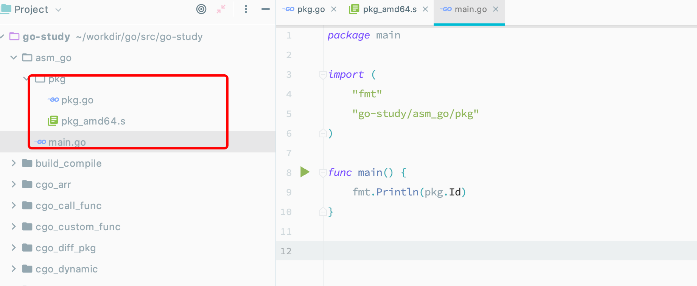
1 | package pkg |
1 | GLOBL ·Id(SB),$8 |
1 | package main |
定义字符串变量
在前一个例子中，我们通过汇编定义了一个整数变量。现在我们提高一点难度，尝试通过汇编定义一个字符串变量。虽然从Go语言角度看，定义字符串和整数变量的写法基本相同，但是字符串底层却有着比单个整数更复杂的数据结构。
实验的流程和前面的例子一样，还是先用 Go 语言实现类似的功能，然后观察分析生成的汇编代码，最后用 Go 汇编语言仿写。首先创建 pkg.go 文件，用 Go 语言定义字符串：
1 | package pkg |
然后用以下命令查看的 Go 语言程序对应的伪汇编代码：
$ go tool compile -S pkg.go
go.string."gopher" SRODATA dupok size=6
0x0000 67 6f 70 68 65 72 gopher
"".Name SDATA size=16
0x0000 00 00 00 00 00 00 00 00 06 00 00 00 00 00 00 00 ................
rel 0+8 t=1 go.string."gopher"+0
输出中出现了一个新的符号 go.string."gopher"，根据其长度和内容分析可以猜测是对应底层的 "gopher" 字符串数据。因为 Go 语言的字符串并不是值类型，Go 字符串其实是一种只读的引用类型。如果多个代码中出现了相同的 "gopher" 只读字符串时，程序链接后可以引用的同一个符号 go.string."gopher" 。因此，该符号有一个 SRODATA 标志表示这个数据在只读内存段，dupok 表示出现多个相同标识符的数据时只保留一个就可以了。而真正的 Go 字符串变量 Name 对应的大小却只有 16 个字节了。其实 Name 变量并没有直接对应 “gopher” 字符串，而是对应 16 字节大小的 reflect.StringHeader 结构体：
type reflect.StringHeader struct {
Data uintptr
Len int
}
从汇编角度看，Name 变量其实对应的是 reflect.StringHeader 结构体类型。前 8 个字节对应底层真实字符串数据的指针，也就是符号 go.string."gopher" 对应的地址。后 8 个字节对应底层真实字符串数据的有效长度，这里是 6 个字节。
现在创建 pkg_amd64.s 文件，尝试通过汇编代码重新定义并初始化 Name 字符串：
1 | GLOBL ·NameData(SB),$8 |
因为在Go汇编语言中，go.string."gopher" 不是一个合法的符号，因此我们无法通过手工创建（这是给编译器保留的部分特权，因为手工创建类似符号可能打破编译器输出代码的某些规则）。因此我们新创建了一个 ·NameData 符号表示底层的字符串数据。然后定义 ·Name 符号内存大小为 16 字节，其中前 8 个字节用 ·NameData 符号对应的地址初始化，后 8 个字节为常量 6 表示字符串长度。当用汇编定义好字符串变量并导出之后，还需要在 Go 语言中声明该字符串变量。然后就可以用 Go 语言代码测试 Name 变量了：
1 | package main |
不幸的是这次运行产生了以下错误：
pkgpath.NameData: missing Go type information for global symbol: size 8
错误提示汇编中定义的 NameData 符号没有类型信息。其实 Go 汇编语言中定义的数据并没有所谓的类型，每个符号只不过是对应一块内存而已，因此 NameData 符号也是没有类型的。但是 Go 语言是再带垃圾回收器的语言，而 Go 汇编语言是工作在自动垃圾回收体系框架内的。当 Go 语言的垃圾回收器在扫描到 NameData 变量的时候，无法知晓该变量内部是否包含指针，因此就出现了这种错误。错误的根本原因并不是 NameData 没有类型，而是NameData 变量没有标注是否会含有指针信息。通过给 NameData 变量增加一个 NOPTR 标志，表示其中不会包含指针数据可以修复该错误：
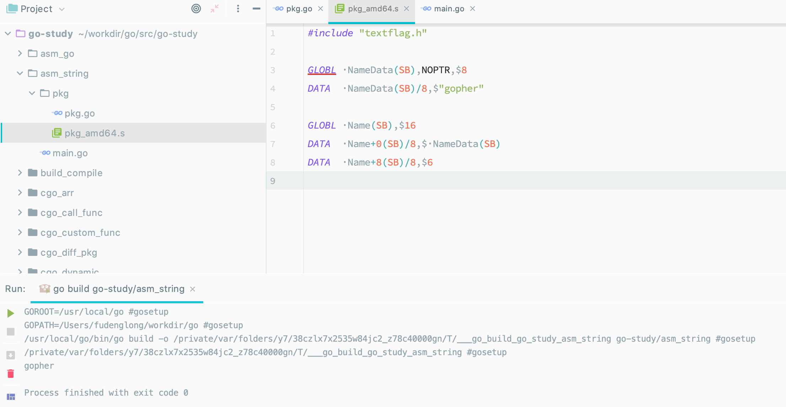
1 | package pkg |
1 | #include "textflag.h" |
1 | package main |
通过给 ·NameData 增加 NOPTR 标志的方式表示其中不含指针数据。我们也可以通过给 ·NameData 变量在 Go 语言中增加一个不含指针并且大小为 8 个字节的类型来修改该错误：
1 | package pkg |
我们将 NameData 声明为长度为 8 的字节数组。编译器可以通过类型分析出该变量不会包含指针，因此汇编代码中可以省略 NOPTR 标志。现在垃圾回收器在遇到该变量的时候就会停止内部数据的扫描。在这个实现中，Name 字符串底层其实引用的是 NameData 内存对应的 “gopher” 字符串数据。因此，如果 NameData 发生变化，Name 字符串的数据也会跟着变化。
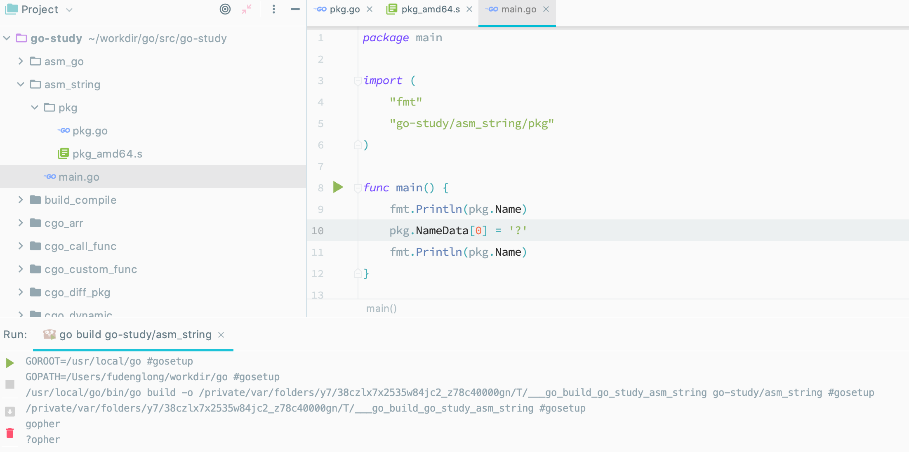
1 | package pkg |
1 | GLOBL ·NameData(SB),$8 |
1 | package main |
当然这和字符串的只读定义是冲突的，正常的代码需要避免出现这种情况。最好的方法是不要导出内部的NameData变量，这样可以避免内部数据被无意破坏。
在用汇编定义字符串时我们可以换一种思维：将底层的字符串数据和字符串头结构体定义在一起，这样可以避免引入 NameData 符号：
1 | GLOBL ·Name(SB),$24 |
在新的结构中，Name 符号对应的内存从 16 字节变为 24 字节，多出的 8 个字节存放底层的 “gopher” 字符串。·Name 符号前 16 个字节依然对应 reflect.StringHeader 结构体：Data 部分对应 $·Name+16(SB) ，表示数据的地址为 Name 符号往后偏移 16 个字节的位置；Len 部分依然对应 6 个字节的长度。这是C语言程序员经常使用的技巧。
定义 main 函数
前面的例子已经展示了如何通过汇编定义整型和字符串类型变量。我们现在将尝试用汇编实现函数，然后输出一个字符串。先创建 main.go 文件，创建并初始化字符串变量，同时声明 main 函数，然后创建 main_amd64.s 文件，里面对应main函数的实现：
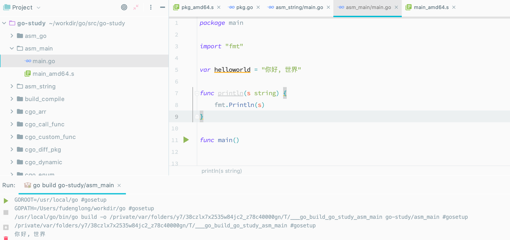
1 | package main |
1 | TEXT ·main(SB), $16-0 |
TEXT ·main(SB), $16-0 用于定义 main 函数，其中 $16-0 表示 main 函数的帧大小是 16 个字节（对应 string 头部结构体的大小，用于给 println 函数传递参数），0 表示 main 函数没有参数和返回值。main 函数内部通过调用运行时内部的 ·println(SB) 函数来打印字符串。然后调用 ·println 打印换行符号。
Go语言函数在函数调用时，完全通过栈传递调用参数和返回值。先通过 MOVQ 指令，将 helloworld 对应的字符串头部结构体的 16 个字节复制到栈指针 SP 对应的 16 字节的空间，然后通过 CALL 指令调用对应函数。最后使用 RET 指令表示当前函数返回。
特殊字符
Go 语言函数或方法符号在编译为目标文件后，目标文件中的每个符号均包含对应包的绝对导入路径。因此目标文件的符号可能非常复杂，比如 “path/to/pkg.(*SomeType).SomeMethod”或 “go.string."abc"” 等名字。目标文件的符号名中不仅仅包含普通的字母，还可能包含点号、星号、小括弧和双引号等诸多特殊字符。而 Go 语言的汇编器是从 plan9 移植过来的二把刀，并不能处理这些特殊的字符，导致了用 Go 汇编语言手工实现 Go 诸多特性时遇到种种限制。
Go 汇编语言同样遵循 Go 语言少即是多的哲学，它只保留了最基本的特性：定义变量和全局函数。其中在变量和全局函数等名字中引入特殊的分隔符号支持 Go语言等包体系。为了简化 Go 汇编器的词法扫描程序的实现，特别引入了 Unicode 中的 中点 · 和大写的除法 /，对应的 Unicode 码点为 U+00B7 和 U+2215 。汇编器编译后，中点 · 会被替换为 ASCII 中的点 “.” ，大写的除法会被替换为ASCII码中的除法 “/” ，比如 math/rand·Int 会被替换为 math/rand.Int 。这样可以将中点和浮点数中的小数点、大写的除法和表达式中的除法符号分开，可以简化汇编程序词法分析部分的实现。
即使暂时抛开Go汇编语言设计取舍的问题，在不同的操作系统不同等输入法中如何输入中点·和除法/两个字符就是一个挑战。这两个字符在 https://golang.org/doc/asm 文档中均有描述，因此直接从该页面复制是最简单可靠的方式。
如果是macOS系统，则有以下几种方法输入中点·：在不开输入法时，可直接用 option+shift+9 输入；如果是自带的简体拼音输入法，输入左上角 ~ 键对应· ，如果是自带的Unicode输入法，则可以输入对应的 Unicode 码点。其中 Unicode 输入法可能是最安全可靠等输入方式。
计算机结构
汇编语言是直面计算机的编程语言，因此理解计算机结构是掌握汇编语言的前提。当前流行的计算机基本采用的是冯·诺伊曼计算机体系结构（在某些特殊领域还有哈佛体系架构）。冯·诺依曼结构也称为普林斯顿结构，采用的是一种将程序指令和数据存储在一起的存储结构。冯·诺伊曼计算机中的指令和数据存储器其实指的是计算机中的内存，然后再配合CPU处理器就组成了一个最简单的计算机了。
汇编语言其实是一种非常简单的编程语言，因为它面向的计算机模型就是非常简单的。让人觉得汇编语言难学主要有几个原因：不同类型的 CPU 都有自己的一套指令；即使是相同的 CPU，32位 和 64位 的运行模式依然会有差异；不同的汇编工具同样有自己特有的汇编指令；不同的操作系统和高级编程语言和底层汇编的调用规范并不相同。本节将描述几个有趣的汇编语言模型，最后精简出一个适用于 AMD64 架构的精简指令集，以便于 Go汇编语言 的学习。
X86-64体系结构
X86 其实是是 80X86 的简称（后面三个字母），包括 Intel 8086、80286、80386 以及 80486 等指令集合，因此其架构被称为 x86 架构。x86-64 是AMD 公司于 1999 年设计的 x86 架构的 64位 拓展，向后兼容于 16位 及 32位 的 x86 架构。X86-64 目前正式名称为 AMD64，也就是 Go 语言中GOARCH 环境变量指定的 AMD64。如果没有特殊说明的话，本章中的汇编程序都是针对64位的X86-64环境。在使用汇编语言之前必须要了解对应的CPU体系结构。下面是 X86/AMD 架构图：
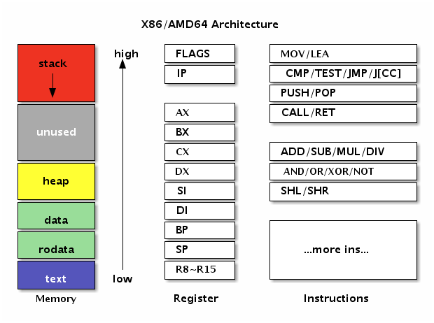
左边是内存部分是常见的内存布局。其中 text 一般对应代码段，用于存储要执行指令数据，代码段一般是只读的。然后是 rodata 和 data 数据段，数据段一般用于存放全局的数据，其中 rodata 是只读的数据段。而 heap 段则用于管理动态的数据，stack 段用于管理每个函数调用时相关的数据。在汇编语言中一般重点关注 text 代码段和 data 数据段，因此 Go 汇编语言中专门提供了对应 TEXT 和 DATA 命令用于定义代码和数据。
中间是X86提供的寄存器。寄存器是 CPU 中最重要的资源，每个要处理的内存数据原则上需要先放到寄存器中才能由CPU处理，同时寄存器中处理完的结果需要再存入内存。X86中除了状态寄存器 FLAGS 和指令寄存器 IP 两个特殊的寄存器外，还有 AX、BX、CX、DX、SI、DI、BP、SP 几个通用寄存器。在X86-64 中又增加了八个以 R8-R15 方式命名的通用寄存器。因为历史的原因 R0-R7 并不是通用寄存器，它们只是 X87 开始引入的 MMX 指令专有的寄存器。在通用寄存器中 BP 和 SP 是两个比较特殊的寄存器：其中 BP 用于记录当前函数帧的开始位置，和函数调用相关的指令会隐式地影响 BP 的值；SP 则对应当前栈指针的位置，和栈相关的指令会隐式地影响SP的值；而某些调试工具需要 BP 寄存器才能正常工作。
右边是X86的指令集。CPU 是由指令和寄存器组成，指令是每个 CPU 内置的算法，指令处理的对象就是全部的寄存器和内存。我们可以将每个指令看作是CPU内置标准库中提供的一个个函数，然后基于这些函数构造更复杂的程序的过程就是用汇编语言编程的过程。
Go汇编中的伪寄存器
Go汇编为了简化汇编代码的编写，引入了 PC、FP、SP、SB 四个伪寄存器。四个伪寄存器加其它的通用寄存器就是 Go 汇编语言对 CPU 的重新抽象，该抽象的结构也适用于其它非X86类型的体系结构。
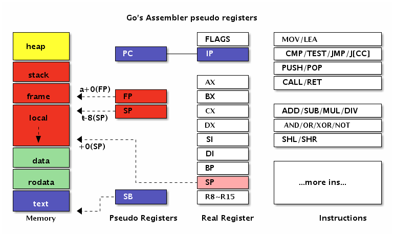
在 AMD64 环境，伪 PC 寄存器其实是 IP 指令计数器寄存器的别名。伪 FP 寄存器对应的是函数的帧指针，一般用来访问函数的参数和返回值。伪 SP 栈指针对应的是当前函数栈帧的底部（不包括参数和返回值部分），一般用于定位局部变量。伪 SP 是一个比较特殊的寄存器，因为还存在一个同名的 SP 真寄存器。真SP 寄存器对应的是栈的顶部，一般用于定位调用其它函数的参数和返回值。
当需要区分伪寄存器和真寄存器的时候只需要记住一点：伪寄存器一般需要一个标识符和偏移量为前缀，如果没有标识符前缀则是真寄存器。比如(SP)、+8(SP)没有标识符前缀为真SP寄存器，而 a(SP)、b+8(SP) 有标识符为前缀表示伪寄存器。
X86-64指令集
很多汇编语言的教程都会强调汇编语言是不可移植的。严格来说汇编语言是在不同的CPU类型、或不同的操作系统环境、或不同的汇编工具链下是不可移植的，而在同一种 CPU 中运行的机器指令是完全一样的。汇编语言这种不可移植性正是其普及的一个极大的障碍。虽然 CPU 指令集的差异是导致不好移植的较大因素，但是汇编语言的相关工具链对此也有不可推卸的责任。而源自Plan9的Go汇编语言对此做了一定的改进：首先Go汇编语言在相同CPU架构上是完全一致的，也就是屏蔽了操作系统的差异；同时Go汇编语言将一些基础并且类似的指令抽象为相同名字的伪指令，从而减少不同CPU架构下汇编代码的差异（寄存器名字和数量的差异是一直存在的）。本节的目的也是找出一个较小的精简指令集，以简化Go汇编语言的学习。
X86是一个极其复杂的系统，有人统计x86-64中指令有将近一千个之多。不仅仅如此，X86中的很多单个指令的功能也非常强大，比如有论文证明了仅仅一个MOV指令就可以构成一个图灵完备的系统。以上这是两种极端情况，太多的指令和太少的指令都不利于汇编程序的编写，但是也从侧面体现了MOV指令的重要性。
通用的基础机器指令大概可以分为数据传输指令、算术运算和逻辑运算指令、控制流指令和其它指令等几类。因此我们可以尝试精简出一个X86-64指令集，以便于Go汇编语言的学习。
因此我们先看看重要的 MOV 指令。其中 MOV 指令可以用于将字面值移动到寄存器、字面值移到内存、寄存器之间的数据传输、寄存器和内存之间的数据传输。需要注意的是，MOV 传输指令的内存操作数只能有一个，可以通过某个临时寄存器达到类似目的。最简单的是忽略符号位的数据传输操作，386和AMD64指令一样，不同的1、2、4和8字节宽度有不同的指令：
| Data Type | 386/AMD64 | Comment |
|---|---|---|
| [1]byte | MOVB | B => Byte，代表字节 |
| [2]byte | MOVW | W => Word，代表字 |
| [4]byte | MOVL | L => Long，代表长字 |
| [8]byte | MOVQ | Q => Quadword，代表四字 |
MOV指令它不仅仅用于在寄存器和内存之间传输数据，而且还可以用于处理数据的扩展和截断操作。当数据宽度和寄存器的宽度不同又需要处理符号位时，386和AMD64有各自不同的指令：
| Data Type | 386 | AMD64 | Comment |
|---|---|---|---|
| int8 | MOVBLSX | MOVBQSX | 带符号的扩展 |
| uint8 | MOVBLZX | MOVBQZX | 用0扩展 |
| int16 | MOVWLSX | MOVWQSX | 带符号扩展 |
| uint16 | MOVWLZX | MOVWQZX | 用0扩展 |
比如当需要将一个int64类型的数据转为 bool 类型时，则需要使用 MOVBQZX 指令处理。
基础算术指令有 ADD、SUB、MUL、DIV 等指令。其中 ADD、SUB、MUL、DIV 用于加、减、乘、除运算，最终结果存入目标寄存器。基础的逻辑运算指令有 AND 、OR 和 NOT 等几个指令，对应逻辑与、或和取反等几个指令。
| 名称 | 解释 |
|---|---|
| ADD | 加法 |
| SUB | 减法 |
| MUL | 乘法 |
| DIV | 除法 |
| AND | 逻辑与 |
| OR | 逻辑或 |
| NOT | 逻辑取反 |
其中算术和逻辑指令是顺序编程的基础。通过逻辑比较影响状态寄存器，再结合有条件跳转指令就可以实现更复杂的分支或循环结构。需要注意的是MUL和DIV等乘除法指令可能隐含使用了某些寄存器，指令细节请查阅相关手册。
控制流指令有 CMP、JMP-if-x、JMP、CALL、RET 等指令。CMP 指令用于两个操作数做减法，根据比较结果设置状态寄存器的符号位和零位，可以用于有条件跳转的跳转条件。JMP-if-x 是一组有条件跳转指令，常用的有 JL、JLZ、JE、JNE、JG、JGE 等指令，对应小于、小于等于、等于、不等于、大于和大于等于等条件时跳转。JMP 指令则对应无条件跳转，将要跳转的地址设置到IP指令寄存器就实现了跳转。而 CALL和 RET 指令分别为调用函数和函数返回指令。
| 名称 | 解释 |
|---|---|
| JMP | 无条件跳转 |
| JMP-if-x | 有条件跳转，JL、JLZ、JE、JNE、JG、JGE |
| CALL | 调用函数 |
| RET | 函数返回 |
无条件和有条件调整指令是实现分支和循环控制流的基础指令。理论上，我们也可以通过跳转指令实现函数的调用和返回功能。不过因为目前函数已经是现代计算机中的一个最基础的抽象，因此大部分的CPU都针对函数的调用和返回提供了专有的指令和寄存器。
其它比较重要的指令有 LEA、PUSH、POP 等几个。其中 LEA 指令将标准参数格式中的内存地址加载到寄存器（而不是加载内存位置的内容）。PUSH 和POP 分别是压栈和出栈指令，通用寄存器中的 SP 为栈指针，栈是向低地址方向增长的。
| 名称 | 解释 |
|---|---|
| LEA | 取地址 |
| PUSH | 压栈 |
| POP | 出栈 |
当需要通过间接索引的方式访问数组或结构体等某些成员对应的内存时，可以用 LEA 指令先对目前内存取地址，然后在操作对应内存的数据。而栈指令则可以用于函数调整自己的栈空间大小。
最后需要说明的是，Go汇编语言可能并没有支持全部的CPU指令。如果遇到没有支持的CPU指令，可以通过Go汇编语言提供的 BYTE 命令将真实的CPU指令对应的机器码填充到对应的位置。完整的X86指令在 https://github.com/golang/arch/blob/master/x86/x86.csv 文件定义。同时Go汇编还正对一些指令定义了别名，具体可以参考这里 https://golang.org/src/cmd/internal/obj/x86/anames.go 。
常量和全局变量
程序中的一切变量的初始值都直接或间接地依赖常量或常量表达式生成。在Go语言中很多变量是默认零值初始化的，但是Go汇编中定义的变量最好还是手工通过常量初始化。有了常量之后，就可以衍生定义全局变量，并使用常量组成的表达式初始化其它各种变量。本节将简单讨论Go汇编语言中常量和全局变量的用法。
常量
Go 汇编语言中常量以 $ 美元符号为前缀。常量的类型有整数常量、浮点数常量、字符常量和字符串常量等几种类型。以下是几种类型常量的例子：
$1 // 十进制
$0xf4f8fcff // 十六进制
$1.5 // 浮点数
$'a' // 字符
$"abcd" // 字符串
其中整数类型常量默认是十进制格式，也可以用十六进制格式表示整数常量。所有的常量最终都必须和要初始化的变量内存大小匹配。对于数值型常量，可以通过常量表达式构成新的常量：
$2+2 // 常量表达式
$3&1<<2 // == $4
$(3&1)<<2 // == $4
其中常量表达式中运算符的优先级和Go语言保持一致。
Go汇编语言中的常量其实不仅仅只有编译时常量，还包含运行时常量。比如包中全局的变量和全局函数在运行时地址也是固定不变的，这里地址不会改变的包变量和函数的地址也是一种汇编常量。
下面是本章第一节用汇编定义的字符串代码：
GLOBL ·NameData(SB),$8
DATA ·NameData(SB)/8,$"gopher"
GLOBL ·Name(SB),$16
DATA ·Name+0(SB)/8,$·NameData(SB)
DATA ·Name+8(SB)/8,$6
其中 美元符号为前缀，因此也可以将它看作是一个常量，它对应的是 NameData 包变量的地址。在汇编指令中，我们也可以通过 LEA 指令来获取 NameData 变量的地址。
全局变量
在Go语言中，变量根据作用域和生命周期有全局变量和局部变量之分。全局变量是包一级的变量，全局变量一般有着较为固定的内存地址，声明周期跨越整个程序运行时间。而局部变量一般是函数内定义的的变量，只有在函数被执行的时间才被在栈上创建，当函数调用完成后将回收（暂时不考虑闭包对局部变量捕获的问题）。
从Go汇编语言角度来看，全局变量和局部变量有着非常大的差异。在Go汇编中全局变量和全局函数更为相似，都是通过一个人为定义的符号来引用对应的内存，区别只是内存中存放是数据还是要执行的指令。因为在冯诺伊曼系统结构的计算机中指令也是数据，而且指令和数据存放在统一编址的内存中。因为指令和数据并没有本质的差别，因此我们甚至可以像操作数据那样动态生成指令（这是所有JIT技术的原理）。而局部变量则需在了解了汇编函数之后，才能通过SP栈空间来隐式定义。
在Go汇编语言中，内存是通过SB伪寄存器定位。SB 是 Static base pointer 的缩写，意为静态内存的开始地址。我们可以将 SB 想象为一个和内容容量有相同大小的字节数组，所有的静态全局符号通常可以通过 SB 加一个偏移量定位，而我们定义的符号其实就是相对于 SB 内存开始地址偏移量。对于 SB 伪寄存器，全局变量和全局函数的符号并没有任何区别。
要定义全局变量，首先要声明一个变量对应的符号，以及变量对应的内存大小。导出变量符号的语法如下：
GLOBL symbol(SB), width
GLOBL 汇编指令用于定义名为 symbol 的变量，变量对应的内存宽度为 width ，内存宽度部分必须用常量初始化。下面的代码通过汇编定义一个 int32 类型的 count 变量：
GLOBL ·count(SB),$4
其中符号 ·count 以中点开头表示是当前包的变量，最终符号名为被展开为 path/to/pkg.count。count 变量的大小是4个字节，常量必须以 $ 美元符号开头。内存的宽度必须是2的指数倍，编译器最终会保证变量的真实地址对齐到机器字倍数。需要注意的是，在Go汇编中我们无法为count变量指定具体的类型。在汇编中定义全局变量时，我们只关心变量的名字和内存大小，变量最终的类型只能在Go语言中声明。
变量定义之后，我们可以通过 DATA 汇编指令指定对应内存中的数据，语法如下：
DATA symbol+offset(SB)/width, value
具体的含义是从symbol+offset偏移量开始，width宽度的内存，用value常量对应的值初始化。DATA初始化内存时，width必须是1、2、4、8几个宽度之一，因为再大的内存无法一次性用一个uint64大小的值表示。对于int32类型的count变量来说，我们既可以逐个字节初始化，也可以一次性初始化：
DATA ·count+0(SB)/1,$1
DATA ·count+1(SB)/1,$2
DATA ·count+2(SB)/1,$3
DATA ·count+3(SB)/1,$4
// or
DATA ·count+0(SB)/4,$0x04030201
因为X86处理器是小端序，因此用十六进制0x04030201初始化全部的4个字节，和用1、2、3、4逐个初始化4个字节是一样的效果。
最后还需要在Go语言中声明对应的变量（和C语言头文件声明变量的作用类似），这样垃圾回收器会根据变量的类型来管理其中的指针相关的内存数据。
数组类型
汇编中数组也是一种非常简单的类型。Go语言中数组是一种有着扁平内存结构的基础类型。因此 [2]byte 类型和 [1]uint16 类型有着相同的内存结构。只有当数组和结构体结合之后情况才会变的稍微复杂。下面我们尝试用汇编定义一个 [2]int 类型的数组变量num：
var num [2]int
然后在汇编中定义一个对应16字节大小的变量，并用零值进行初始化：
GLOBL ·num(SB),$16
DATA ·num+0(SB)/8,$0
DATA ·num+8(SB)/8,$0
下图是Go语句和汇编语句定义变量时的对应关系：
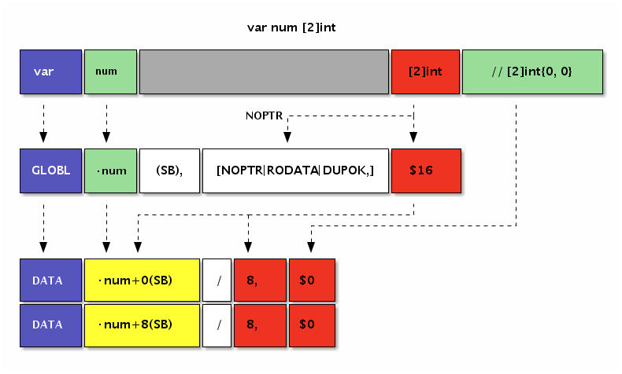
汇编代码中并不需要NOPTR标志，因为Go编译器会从Go语言语句声明的[2]int类型中推导出该变量内部没有指针数据。
bool 型变量
Go汇编语言定义变量无法指定类型信息，因此需要先通过Go语言声明变量的类型。以下是在Go语言中声明的几个bool类型变量：
var (
boolValue bool
trueValue bool
falseValue bool
)
在Go语言中声明的变量不能含有初始化语句。然后下面是amd64环境的汇编定义：
GLOBL ·boolValue(SB),$1 // 未初始化
GLOBL ·trueValue(SB),$1 // var trueValue = true
DATA ·trueValue(SB)/1,$1 // 非 0 均为 true
GLOBL ·falseValue(SB),$1 // var falseValue = true
DATA ·falseValue(SB)/1,$0
bool类型的内存大小为1个字节。并且汇编中定义的变量需要手工指定初始化值，否则将可能导致产生未初始化的变量。当需要将1个字节的bool类型变量加载到8字节的寄存器时，需要使用MOVBQZX指令将不足的高位用0填充。
int 型变量
所有的整数类型均有类似的定义的方式，比较大的差异是整数类型的内存大小和整数是否是有符号。下面是声明的int32和uint32类型变量：
var int32Value int32
var uint32Value uint32
在Go语言中声明的变量不能含有初始化语句。然后下面是amd64环境的汇编定义：
GLOBL ·int32Value(SB),$4
DATA ·int32Value+0(SB)/1,$0x01 // 第0字节
DATA ·int32Value+1(SB)/1,$0x02 // 第1字节
DATA ·int32Value+2(SB)/2,$0x03 // 第3-4字节
GLOBL ·uint32Value(SB),$4
DATA ·uint32Value(SB)/4,$0x01020304 // 第1-4字节
汇编定义变量时初始化数据并不区分整数是否有符号。只有在CPU指令处理该寄存器数据时，才会根据指令的类型来取分数据的类型或者是否带有符号位。
float 型变量
Go汇编语言通常无法区分变量是否是浮点数类型，与之相关的浮点数机器指令会将变量当作浮点数处理。Go语言的浮点数遵循IEEE754标准，有 float32 单精度浮点数和 float64 双精度浮点数之分。
IEEE754标准中，最高位 1bit 为符号位，然后是指数位（指数为采用移码格式表示），然后是有效数部分（其中小数点左边的一个 bit 位被省略）。下图是IEEE754 中 float32 类型浮点数的bit布局：
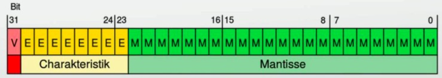
IEEE754浮点数还有一些奇妙的特性：比如有正负两个0；除了无穷大和无穷小Inf还有非数NaN；同时如果两个浮点数有序那么对应的有符号整数也是有序的（反之则不一定成立，因为浮点数中存在的非数是不可排序的）。浮点数是程序中最难琢磨的角落，因为程序中很多手写的浮点数字面值常量根本无法精确表达，浮点数计算涉及到的误差舍入方式可能也的随机的。
下面是在Go语言中声明两个浮点数（如果没有在汇编中定义变量，那么声明的同时也会定义变量）。
var float32Value float32
var float64Value float64
然后在汇编中定义并初始化上面声明的两个浮点数：
GLOBL ·float32Value(SB),$4
DATA ·float32Value+0(SB)/4,$1.5 // var float32Value = 1.5
GLOBL ·float64Value(SB),$8
DATA ·float64Value(SB)/8,$0x01020304 // bit 方式初始化
我们在上一节精简的算术指令中都是针对整数，如果要通过整数指令处理浮点数的加减法必须根据浮点数的运算规则进行：先对齐小数点，然后进行整数加减法，最后再对结果进行归一化并处理精度舍入问题。不过在目前的主流CPU中，都提针对浮点数提供了专有的计算指令。
string 类型变量
从Go汇编语言角度看，字符串只是一种结构体。string的头结构定义如下：
1 | type reflect.StringHeader struct { |
在amd64环境中StringHeader有16个字节大小，因此我们先在Go代码声明字符串变量，然后在汇编中定义一个16字节大小的变量：
var helloworld string
GLOBL ·helloworld(SB),$16
同时我们可以为字符串准备真正的数据。在下面的汇编代码中，我们定义了一个text当前文件内的私有变量（以<>为后缀名），内容为“Hello World!”：
GLOBL text<>(SB),NOPTR,$16
DATA text<>+0(SB)/8,$"Hello Wo"
DATA text<>+8(SB)/8,$"rld!"
虽然 text<> 私有变量表示的字符串只有12个字符长度，但是我们依然需要将变量的长度扩展为2的指数倍数，这里也就是16个字节的长度。其中 NOPTR 表示 text<> 不包含指针数据。
然后使用 text 私有变量对应的内存地址对应的常量来初始化字符串头结构体中的 Data 部分，并且手工指定 Len 部分为字符串的长度：
DATA ·helloworld+0(SB)/8,$text<>(SB) // StringHeader.Data
DATA ·helloworld+8(SB)/8,$12 // StringHeader.Len
需要注意的是，字符串是只读类型，要避免在汇编中直接修改字符串底层数据的内容。
slice 类型变量
slice变量和string变量相似，只不过是对应的是切片头结构体而已。切片头的结构如下：
1 | type reflect.SliceHeader struct { |
对比可以发现，切片的头的前2个成员字符串是一样的。因此我们可以在前面字符串变量的基础上，再扩展一个Cap成员就成了切片类型了：
var helloworld []byte
GLOBL ·helloworld(SB),$24 // var helloworld []byte("Hello World!")
DATA ·helloworld+0(SB)/8,$text<>(SB) // StringHeader.Data
DATA ·helloworld+8(SB)/8,$12 // StringHeader.Len
DATA ·helloworld+16(SB)/8,$16 // StringHeader.Cap
GLOBL text<>(SB),$16
DATA text<>+0(SB)/8,$"Hello Wo" // ...string data...
DATA text<>+8(SB)/8,$"rld!" // ...string data...
因为切片和字符串的相容性，我们可以将切片头的前16个字节临时作为字符串使用，这样可以省去不必要的转换。
map/channel 类型变量
map/channel 等类型并没有公开的内部结构，它们只是一种未知类型的指针，无法直接初始化。在汇编代码中我们只能为类似变量定义并进行0值初始化：
var m map[string]int
var ch chan int
GLOBL ·m(SB),$8 // var m map[string]int
DATA ·m+0(SB)/8,$0
GLOBL ·ch(SB),$8 // var ch chan int
DATA ·ch+0(SB)/8,$0
其实在runtime包中为汇编提供了一些辅助函数。比如在汇编中可以通过runtime.makemap和runtime.makechan内部函数来创建map和chan变量。辅助函数的签名如下：
1 | func makemap(mapType *byte, hint int, mapbuf *any) (hmap map[any]any) |
需要注意的是，makemap是一种范型函数，可以创建不同类型的map，map的具体类型是通过 mapType 参数指定。
变量的内存布局
我们已经多次强调，在Go汇编语言中变量是没有类型的。因此在Go语言中有着不同类型的变量，底层可能对应的是相同的内存结构。深刻理解每个变量的内存布局是汇编编程时的必备条件。
首先查看前面已经见过的 [2]int 类型数组的内存布局：
变量在data段分配空间，数组的元素地址依次从低向高排列。
然后再查看下标准库图像包中 image.Point 结构体类型变量的内存布局：
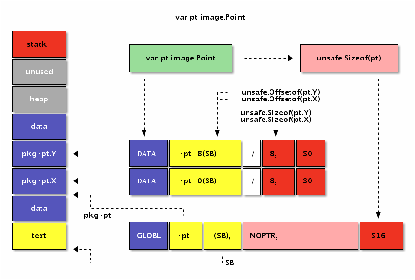
变量也时在data段分配空间，变量结构体成员的地址也是依次从低向高排列。因此 [2]int 和 image.Point 类型底层有着近似相同的内存布局。
标识符规则和特殊标志
Go语言的标识符可以由绝对的包路径加标识符本身定位，因此不同包中的标识符即使同名也不会有问题。Go汇编是通过特殊的符号来表示斜杠和点符号，因为这样可以简化汇编器词法扫描部分代码的编写，只要通过字符串替换就可以了。
下面是汇编中常见的几种标识符的使用方式（通常也适用于函数标识符）：
GLOBL ·pkg_name1(SB),$1
GLOBL main·pkg_name2(SB),$1
GLOBL my/pkg·pkg_name(SB),$1
此外，Go汇编中可以定义仅当前文件可以访问的私有标识符（类似C语言中文件内static修饰的变量），以 <> 为后缀名：
GLOBL file_private<>(SB),$1
这样可以减少私有标识符对其它文件内标识符命名的干扰。
此外，Go汇编语言还在”textflag.h”文件定义了一些标志。其中用于变量的标志有DUPOK、RODATA和NOPTR几个。DUPOK表示该变量对应的标识符可能有多个，在链接时只选择其中一个即可（一般用于合并相同的常量字符串，减少重复数据占用的空间）。RODATA标志表示将变量定义在只读内存段，因此后续任何对此变量的修改操作将导致异常（recover也无法捕获）。NOPTR则表示此变量的内部不含指针数据，让垃圾回收器忽略对该变量的扫描。如果变量已经在Go代码中声明过的话，Go编译器会自动分析出该变量是否包含指针，这种时候可以不用手写NOPTR标志。
比如下面的例子是通过汇编来定义一个只读的int类型的变量：
var const_id int // readonly
#include "textflag.h"
GLOBL ·const_id(SB),NOPTR|RODATA,$8
DATA ·const_id+0(SB)/8,$9527
我们使用 #include 语句包含定义标志的 "textflag.h" 头文件（和C语言中预处理相同）。然后 GLOBL 汇编命令在定义变量时，给变量增加了NOPTR 和 RODATA 两个标志（多个标志之间采用竖杠分割），表示变量中没有指针数据同时定义在只读数据段。
变量一般也叫可取地址的值，但是 const_id 虽然可以取地址，但是确实不能修改。不能修改的限制并不是由编译器提供，而是因为对该变量的修改会导致对只读内存段进行写，从而导致异常。
函数
Go汇编语言中，可以也建议通过Go语言来定义全局变量，那么剩下的也就是函数了。只有掌握了汇编函数的基本用法，才能真正算是Go汇编语言入门。本章将简单讨论Go汇编中函数的定义和用法。
基本语法
函数标识符通过 TEXT 汇编指令定义，表示该行开始的指令定义在 TEXT 内存段。TEXT 语句后的指令一般对应函数的实现，但是对于 TEXT 指令本身来说并不关心后面是否有指令。因此 TEXT 和 LABEL 定义的符号是类似的，区别只是 LABEL 是用于跳转标号，但是本质上他们都是通过标识符映射一个内存地址。
函数的定义的语法如下：
TEXT symbol(SB), [flags,] $framesize[-argsize]
函数的定义部分由5个部分组成：TEXT指令、函数名、可选的flags标志、函数帧大小和可选的函数参数大小。
其中 TEXT 用于定义函数符号，函数名中当前包的路径可以省略。函数的名字后面是(SB)，表示是函数名符号相对于 SB 伪寄存器的偏移量，二者组合在一起最终是绝对地址。作为全局的标识符的全局变量和全局函数的名字一般都是基于 SB 伪寄存器的相对地址。标志部分用于指示函数的一些特殊行为，标志在textlags.h 文件中定义，常见的 NOSPLIT 主要用于指示叶子函数不进行栈分裂。framesize 部分表示函数的局部变量需要多少栈空间，其中包含调用其它函数时准备调用参数的隐式栈空间。最后是可以省略的参数大小，之所以可以省略是因为编译器可以从Go语言的函数声明中推导出函数参数的大小。
我们首先从一个简单的 Swap 函数开始。Swap 函数用于交互输入的两个参数的顺序，然后通过返回值返回交换了顺序的结果。如果用 Go 语言中声明 Swap 函数，大概这样的：
1 | package main |
下面是 main 包中 Swap 函数在汇编中两种定义方式：
// func Swap(a, b int) (int, int)
TEXT ·Swap(SB), NOSPLIT, $0-32
// func Swap(a, b int) (int, int)
TEXT ·Swap(SB), NOSPLIT, $0
下图是Swap函数几种不同写法的对比关系图：
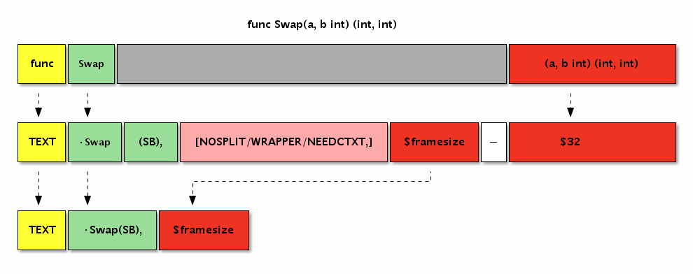
第一种是最完整的写法：函数名部分包含了当前包的路径，同时指明了函数的参数大小为32个字节（对应参数和返回值的4个int类型）。第二种写法则比较简洁，省略了当前包的路径和参数的大小。如果有 NOSPLIT 标注，会禁止汇编器为汇编函数插入栈分裂的代码。NOSPLIT 对应Go语言中的 //go:nosplit 注释。
目前可能遇到的函数标志有 NOSPLIT、WRAPPER 和 NEEDCTXT几 个。其中 NOSPLIT 不会生成或包含栈分裂代码，这一般用于没有任何其它函数调用的叶子函数，这样可以适当提高性能。WRAPPER 标志则表示这个是一个包装函数，在 panic 或 runtime.caller 等某些处理函数帧的地方不会增加函数帧计数。最后的 NEEDCTXT 表示需要一个上下文参数，一般用于闭包函数。
需要注意的是函数也没有类型，上面定义的Swap函数签名可以下面任意一种格式：
func Swap(a, b, c int) int
func Swap(a, b, c, d int)
func Swap() (a, b, c, d int)
func Swap() (a []int, d int)
// ...
对于汇编函数来说，只要是函数的名字和参数大小一致就可以是相同的函数了。而且在Go汇编语言中，输入参数和返回值参数是没有任何的区别的。
函数参数和返回值
对于函数来说，最重要的是函数对外提供的API约定，包含函数的名称、参数和返回值。当这些都确定之后，如何精确计算参数和返回值的大小是第一个需要解决的问题。
比如有一个Swap函数的签名如下：
func Swap(a, b int) (ret0, ret1 int)
对于这个函数，我们可以轻易看出它需要4个int类型的空间，参数和返回值的大小也就是32个字节：
TEXT ·Swap(SB), $0-32
那么如何在汇编中引用这4个参数呢？为此Go汇编中引入了一个FP伪寄存器，表示函数当前帧的地址，也就是第一个参数的地址。因此我们以通过 +0(FP)、+8(FP)、+16(FP) 和 +24(FP) 来分别引用a、b、ret0和ret1四个参数。
但是在汇编代码中，我们并不能直接以 +0(FP) 的方式来使用参数。为了编写易于维护的汇编代码，Go汇编语言要求，任何通过FP伪寄存器访问的变量必和一个临时标识符前缀组合后才能有效，一般使用参数对应的变量名作为前缀。
下图是Swap函数中参数和返回值在内存中的布局图：
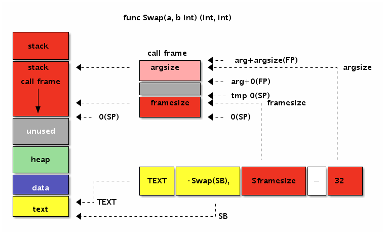
下面的代码演示了如何在汇编函数中使用参数和返回值：
TEXT ·Swap(SB), $0
MOVQ a+0(FP), AX // AX = a
MOVQ b+8(FP), BX // BX = b
MOVQ BX, ret0+16(FP) // ret0 = BX
MOVQ AX, ret1+24(FP) // ret1 = AX
RET
从代码可以看出 a、b、ret0 和 ret1 的内存地址是依次递增的，FP 伪寄存器是第一个变量的开始地址。
参数和返回值内存布局
下面我们尝试一个更复杂的函数参数和返回值的计算。比如有以下一个函数：
func Foo(a bool, b int16) (c []byte)
函数的参数有不同的类型，而且返回值中含有更复杂的切片类型。我们该如何计算每个参数的位置和总的大小呢？
其实函数参数和返回值的大小以及对齐问题和结构体的大小和成员对齐问题是一致的，函数的第一个参数和第一个返回值会分别进行一次地址对齐。我们可以用诡代思路将全部的参数和返回值以同样的顺序分别放到两个结构体中，将FP伪寄存器作为唯一的一个指针参数，而每个成员的地址也就是对应原来参数的地址。
用这样的策略可以很容易计算前面的Foo函数的参数和返回值的地址和总大小。为了便于描述我们定义一个Foo_args_and_returns临时结构体类型用于诡代原始的参数和返回值：
1 | type Foo_args struct { |
然后将Foo原来的参数替换为结构体形式，并且只保留唯一的FP作为参数：
1 | func Foo(FP *SomeFunc_args, FP_ret *SomeFunc_returns) { |
代码完全和Foo函数参数的方式类似。唯一的差异是每个函数的偏移量，通过unsafe.Offsetof函数自动计算生成。因为Go结构体中的每个成员已经满足了对齐要求，因此采用通用方式得到每个参数的偏移量也是满足对齐要求的。序言注意的是第一个返回值地址需要重新对齐机器字大小的倍数。
Foo函数的参数和返回值的大小和内存布局：
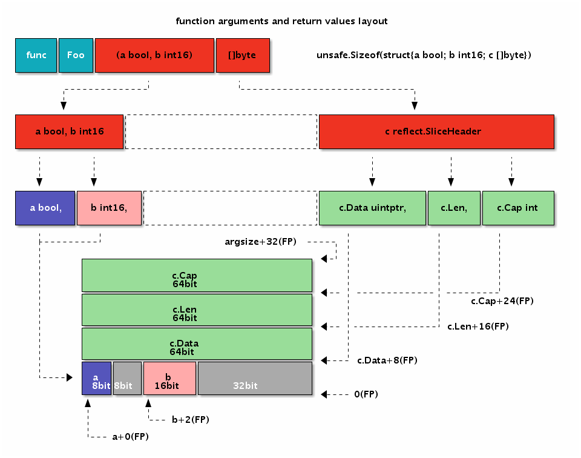
下面的代码演示了Foo汇编函数参数和返回值的定位：
TEXT ·Foo(SB), $0
MOVEQ a+0(FP), AX // a
MOVEQ b+2(FP), BX // b
MOVEQ c_dat+8*1(FP), CX // c.Data
MOVEQ c_len+8*2(FP), DX // c.Len
MOVEQ c_cap+8*3(FP), DI // c.Cap
RET
其中a和b参数之间出现了一个字节的空洞，b和c之间出现了4个字节的空洞。出现空洞的原因是要保证每个参数变量地址都要对齐到相应的倍数。
函数中的局部变量
从Go语言函数角度讲，局部变量是函数内明确定义的变量，同时也包含函数的参数和返回值变量。但是从Go汇编角度看，局部变量是指函数运行时，在当前函数栈帧所对应的内存内的变量，不包含函数的参数和返回值（因为访问方式有差异）。函数栈帧的空间主要由函数参数和返回值、局部变量和被调用其它函数的参数和返回值空间组成。为了便于理解，我们可以将汇编函数的局部变量类比为Go语言函数中显式定义的变量，不包含参数和返回值部分。
为了便于访问局部变量，Go汇编语言引入了伪 SP 寄存器，对应当前栈帧的底部。因为在当前栈帧时栈的底部是固定不变的，因此局部变量的相对于伪SP的偏移量也就是固定的，这可以简化局部变量的维护工作。SP真伪寄存器的区分只有一个原则：如果使用 SP 时有一个临时标识符前缀就是 伪SP，否则就是 真SP 寄存器。比如 a(SP) 和 b+8(SP) 有 a 和 b 临时前缀，这里都是 伪SP，而 前缀部分一般用于表示局部变量的名字。而(SP)和+8(SP)没有临时标识符作为前缀，它们都是 真SP 寄存器。
在X86平台，函数的调用栈是从高地址向低地址增长的，因此伪 SP 寄存器对应栈帧的底部其实是对应更大的地址。当前栈的顶部对应真实存在的SP寄存器，对应当前函数栈帧的栈顶，对应更小的地址。如果整个内存用Memory数组表示，那么Memory[0(SP):end-0(SP)]就是对应当前栈帧的切片，其中开始位置是真SP寄存器，结尾部分是伪SP寄存器。真SP寄存器一般用于表示调用其它函数时的参数和返回值，真SP寄存器对应内存较低的地址，所以被访问变量的偏移量是正数；而伪SP寄存器对应高地址，对应的局部变量的偏移量都是负数。
为了便于对比，我们将前面Foo函数的参数和返回值变量改成局部变量：
1 | func Foo() { |
然后通过汇编语言重新实现Foo函数，并通过伪SP来定位局部变量：
1 | TEXT ·Foo(SB), $32-0 |
Foo函数有3个局部变量，但是没有调用其它的函数，因为对齐和填充的问题导致函数的栈帧大小为32个字节。因为Foo函数没有参数和返回值，因此参数和返回值大小为0个字节，当然这个部分可以省略不写。而局部变量中先定义的变量c离伪SP寄存器对应的地址最近，最后定义的变量a离伪SP寄存器最远。有两个因素导致出现这种逆序的结果：一个从Go语言函数角度理解，先定义的c变量地址要比后定义的变量的地址更大；另一个是伪SP寄存器对应栈帧的底部，而X86中栈是从高向低生长的，所以最先定义有着更大地址的c变量离栈的底部伪SP更近。
我们同样可以通过结构体来模拟局部变量的布局：
1 | func Foo() { |
我们将之前的三个局部变量挪到一个结构体中。然后构造一个SP变量对应伪SP寄存器，对应局部变量结构体的顶部。然后根据局部变量总大小和每个变量对应成员的偏移量计算相对于伪SP的距离，最终偏移量是一个负数。
通过这种方式可以处理复杂的局部变量的偏移，同时也能保证每个变量地址的对齐要求。当然，除了地址对齐外，局部变量的布局并没有顺序要求。对于汇编比较熟悉同学可以根据自己的习惯组织变量的布局。
下面是Foo函数的局部变量的大小和内存布局：
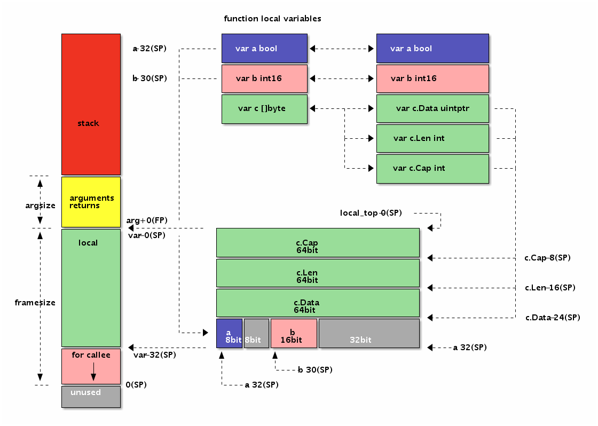
调用其他函数
常见的用Go汇编实现的函数都是叶子函数，也就是被其它函数调用的函数，但是很少调用其它函数。这主要是因为叶子函数比较简单，可以简化汇编函数的编写；同时一般性能或特性的瓶颈也处于叶子函数。但是能够调用其它函数和能够被其它函数调用同样重要，否则Go汇编就不是一个完整的汇编语言。
在前文中我们已经学习了一些汇编实现的函数参数和返回值处理的规则。那么一个显然的问题是，汇编函数的参数是从哪里来的？答案同样明显，被调用函数的参数是由调用方准备的：调用方在栈上设置好空间和数据后调用函数，被调用方在返回前将返回值放在对应的位置，函数通过RET指令返回调用方函数之后，调用方再从返回值对应的栈内存位置取出结果。Go语言函数的调用参数和返回值均是通过栈传输的，这样做的优点是函数调用栈比较清晰，缺点是函数调用有一定的性能损耗（Go编译器是通过函数内联来缓解这个问题的影响）。
为了便于展示，我们先使用Go语言来构造三个逐级调用的函数：
1 | func main() { |
其中main函数通过字面值常量直接调用printsum函数，printsum函数输出两个整数的和。而printsum函数内部又通过调用sum函数计算两个数的和，并最终调用打印函数进行输出。因为printsum既是被调用函数又是调用函数，所以它是我们要重点分析的函数。
下图展示了三个函数逐级调用时内存中函数参数和返回值的布局：
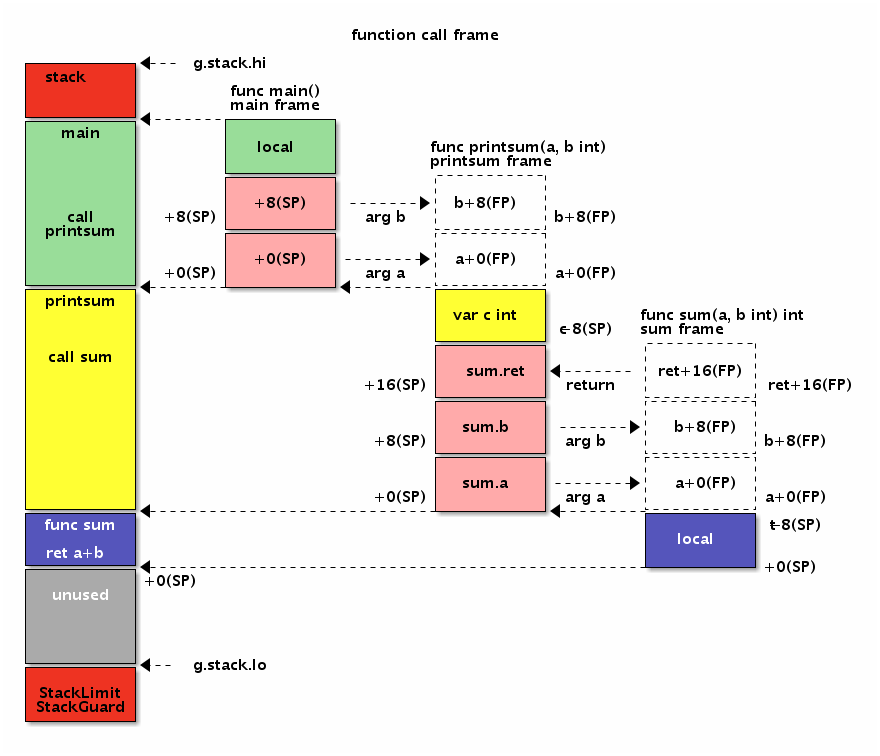
控制流
程序主要有顺序、分支和循环几种执行流程。本节主要讨论如何将Go语言的控制流比较直观地转译为汇编程序，或者说如何以汇编思维来编写Go语言代码。
顺序执行
顺序执行是我们比较熟悉的工作模式，类似俗称流水账编程。所有不含分支、循环和goto语句，并且没有递归调用的Go函数一般都是顺序执行的。
比如有如下顺序执行的代码：
1 | func main() { |
我们尝试用Go汇编的思维改写上述函数。因为X86指令中一般只有2个操作数，因此在用汇编改写时要求出现的变量表达式中最多只能有一个运算符。同时对于一些函数调用，也需要用汇编中可以调用的函数来改写。
第一步改写依然是使用Go语言，只不过是用汇编的思维改写：
1 | func main() { |
首选模仿C语言的处理方式在函数入口处声明全部的局部变量。然后根据MOV、ADD、MUL等指令的风格，将之前的变量表达式展开为用=、+=和*=几种运算表达的多个指令。最后用runtime包内部的printint和printnl函数代替之前的println函数输出结果。
经过用汇编的思维改写过后，上述的Go函数虽然看着繁琐了一点，但是还是比较容易理解的。下面我们进一步尝试将改写后的函数继续转译为汇编函数：
1 | TEXT ·main(SB), $24-0 |
汇编实现main函数的第一步是要计算函数栈帧的大小。因为函数内有a、b两个int类型变量，同时调用的runtime·printint函数参数是一个int类型并且没有返回值，因此main函数的栈帧是3个int类型组成的24个字节的栈内存空间。
在函数的开始处先将变量初始化为0值，其中 a-8*2(SP)对应 a 变量、a-8*1(SP) 对应b变量（因为a变量先定义，因此a变量的地址更小）。
然后给a变量分配一个AX寄存器，并且通过AX寄存器将a变量对应的内存设置为10，AX也是10。为了输出a变量，需要将AX寄存器的值放到0(SP)位置，这个位置的变量将在调用runtime·printint函数时作为它的参数被打印。因为我们之前已经将AX的值保存到a变量内存中了，因此在调用函数前并不需要再进行寄存器的备份工作。
在调用函数返回之后，全部的寄存器将被视为可能被调用的函数修改，因此我们需要从a、b对应的内存中重新恢复寄存器AX和BX。然后参考上面Go语言中b变量的计算方式更新BX对应的值，计算完成后同样将BX的值写入到b对应的内存。
需要说明的是，上面的代码中IMULQ AX, BX使用了IMULQ指令来计算乘法。没有使用MULQ指令的原因是MULQ指令默认使用AX保存结果。读者可以自己尝试用MULQ指令改写上述代码。
最后以b变量作为参数再次调用runtime·printint函数进行输出工作。所有的寄存器同样可能被污染，不过main函数马上就返回了，因此不再需要恢复AX、BX等寄存器了。
重新分析汇编改写后的整个函数会发现里面很多的冗余代码。我们并不需要a、b两个临时变量分配两个内存空间，而且也不需要在每个寄存器变化之后都要写入内存。下面是经过优化的汇编函数：
1 | TEXT ·main(SB), $16-0 |
首先是将main函数的栈帧大小从24字节减少到16字节。唯一需要保存的是a变量的值，因此在调用runtime·printint函数输出时全部的寄存器都可能被污染，我们无法通过寄存器备份a变量的值，只有在栈内存中的值才是安全的。然后在BX寄存器并不需要保存到内存。其它部分的代码基本保持不变。
if/goto跳转
Go语言刚刚开源的时候并没有goto语句，后来Go语言虽然增加了goto语句，但是并不推荐在编程中使用。有一个和cgo类似的原则：如果可以不使用goto语句，那么就不要使用goto语句。Go语言中的goto语句是有严格限制的：它无法跨越代码块，并且在被跨越的代码中不能含有变量定义的语句。虽然Go语言不推荐goto语句，但是goto确实每个汇编语言码农的最爱。因为goto近似等价于汇编语言中的无条件跳转指令JMP，配合if条件goto就组成了有条件跳转指令，而有条件跳转指令正是构建整个汇编代码控制流的基石。
为了便于理解，我们用Go语言构造一个模拟三元表达式的If函数：
1 | func If(ok bool, a, b int) int { |
比如求两个数最大值的三元表达式(a>b)?a:b用If函数可以这样表达：If(a>b, a, b)。因为语言的限制，用来模拟三元表达式的If函数不支持泛型（可以将a、b和返回类型改为空接口，不过使用会繁琐一些）。
这个函数虽然看似只有简单的一行，但是包含了if分支语句。在改用汇编实现前，我们还是先用汇编的思维来重新审视If函数。在改写时同样要遵循每个表达式只能有一个运算符的限制，同时if语句的条件部分必须只有一个比较符号组成，if语句的body部分只能是一个goto语句。
用汇编思维改写后的If函数实现如下：
1 | func If(ok int, a, b int) int { |
因为汇编语言中没有bool类型，我们改用int类型代替bool类型（真实的汇编是用byte表示bool类型，可以通过MOVBQZX指令加载byte类型的值，这里做了简化处理）。当ok参数非0时返回变量a，否则返回变量b。我们将ok的逻辑反转下：当ok参数为0时，表示返回b，否则返回变量a。在if语句中，当ok参数为0时goto到L标号指定的语句，也就是返回变量b。如果if条件不满足，也就是ok参数非0，执行后面的语句返回变量a。
上述函数的实现已经非常接近汇编语言，下面是改为汇编实现的代码：
1 | TEXT ·If(SB), NOSPLIT, $0-32 |
首先是将三个参数加载到寄存器中，ok参数对应CX寄存器，a、b分别对应AX、BX寄存器。然后使用CMPQ比较指令将CX寄存器和常数0进行比较。如果比较的结果为0，那么下一条JZ为0时跳转指令将跳转到L标号对应的语句，也就是返回变量b的值。如果比较的结果不为0，那么JZ指令将没有效果，继续执行后面的指令，也就是返回变量a的值。
在跳转指令中，跳转的目标一般是通过一个标号表示。不过在有些通过宏实现的函数中，更希望通过相对位置跳转，这时候可以通过PC寄存器的偏移量来计算临近跳转的位置。
for 循环
Go语言的for循环有多种用法，我们这里只选择最经典的for结构来讨论。经典的for循环由初始化、结束条件、迭代步长三个部分组成，再配合循环体内部的if条件语言，这种for结构可以模拟其它各种循环类型。
基于经典的for循环结构，我们定义一个LoopAdd函数，可以用于计算任意等差数列的和：
1 | func LoopAdd(cnt, v0, step int) int { |
比如1+2+…+100等差数列可以这样计算LoopAdd(100, 1, 1)，而10+8+…+0等差数列则可以这样计算LoopAdd(5, 10, -2)。在用汇编彻底重写之前先采用前面if/goto类似的技术来改造for循环。
新的LoopAdd函数只有if/goto语句构成：
1 | func LoopAdd(cnt, v0, step int) int { |
函数的开头先定义两个局部变量便于后续代码使用。然后将for语句的初始化、结束条件、迭代步长三个部分拆分为三个代码段，分别用LOOP_BEGIN、LOOP_IF、LOOP_BODY三个标号表示。其中LOOP_BEGIN循环初始化部分只会执行一次，因此该标号并不会被引用，可以省略。最后LOOP_END语句表示for循环的结束。四个标号分隔出的三个代码段分别对应for循环的初始化语句、循环条件和循环体，其中迭代语句被合并到循环体中了。
下面用汇编语言重新实现LoopAdd函数
1 | #include "textflag.h" |
其中v0和result变量复用了一个BX寄存器。在LOOP_BEGIN标号对应的指令部分，用MOVQ将DX寄存器初始化为0，DX对应变量i，循环的迭代变量。在LOOP_IF标号对应的指令部分，使用CMPQ指令比较DX和AX，如果循环没有结束则跳转到LOOP_BODY部分，否则跳转到LOOP_END部分结束循环。在LOOP_BODY部分，更新迭代变量并且执行循环体中的累加语句，然后直接跳转到LOOP_IF部分进入下一轮循环条件判断。LOOP_END标号之后就是返回累加结果的语句。
循环是最复杂的控制流，循环中隐含了分支和跳转语句。掌握了循环的写法基本也就掌握了汇编语言的基础写法。更极客的玩法是通过汇编语言打破传统的控制流，比如跨越多层函数直接返回，比如参考基因编辑的手段直接执行一个从C语言构建的代码片段等。总之掌握规律之后，你会发现其实汇编语言编程会变得异常简单和有趣。
汇编代码获取
编译时输出：
go tool compile -S -l -N -m main.go反汇编
go tool objdump -s main.main maingo build -gcflags="-S -l -N -m" main.go